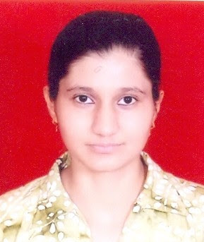

Information technology (NBA Accredited)
Information Technology is most prominent and rapidly developing field in todays world. To maintain speed with latest trends in Information Technology industry, our Information Technology department is fully empowered. Our fully air-conditioned laboratories contain sufficient number of computer systems with latest hardware and software configuration. Since IT is composed of data processing and transmission, we are having latest communication hardware and software with proper multimedia support to each system. A very high speed internet connection is there in the labs. Net surfing is provided to the students as per their requirements. Guest faculty specialized in respective fields of Information Technology are invited from time to time to keep students in touch with latest trends in technology and to broaden their spectrum of knowledge. All facilities in the labs are continuously examined and upgraded whenever required. The department has well qualified and experienced faculty for guiding students in right direction. Our aim here is to expose students to latest and growing technologies which help them to become highly skilled IT professional.
To build a culture of innovation and research in students and make them ready to solve upcoming challenges of human life using computing.
M1: To develop 'educational pathways' so that students can take their career towards success.
M2: To imbibe curiosity and support innovativeness by providing guidance to use the technology effectively.
M3: To inculcate management skills, integrity and honesty through curricular, co-curricular and extra-curricular activities.
PEO1. Graduates of IT program are prepared to be employed in IT industries and be engaged in learning, understanding, and applying new ideas.
PEO2. The graduates are prepared to perform effectively as individuals and team members in the workplace,growing into highly technical or project management and leadership roles.
PEO3. Graduates are prepared to apply basic principles of practices of computing grounded in mathematics and science for successfully completing software related projects to satisfy customer business objectives and productively engage in research.
PEO4. Graduates are prepared to pursue higher studies so that they can contribute to the teaching profession/research and development of information technology and other allied fields.
1. Engineering knowledge: Apply the knowledge of mathematics, science, engineering fundamentals, and an engineering specialization to the solution of complex engineering problems.
2. Problem analysis: Identify, formulate, review research literature, and analyze complex engineering problems reaching substantiated conclusions using first principles of mathematics, natural sciences, and engineering sciences.
3. Design/development of solutions: Design solutions for complex engineering problems and design system components or processes that meet the specified needs with appropriate consideration for the public health and safety, and the cultural, societal, and environmental considerations.
4. Conduct investigations of complex problems: Use research-based knowledge and research methods including design of experiments, analysis and interpretation of data, and synthesis of the information to provide valid conclusions.
5. Modern tool usage: Create, select, and apply appropriate techniques, resources, and modern engineering and IT tools including prediction and modeling to complex engineering activities with an understanding of the limitations.
6. The engineer and society: Apply reasoning informed by the contextual knowledge to assess societal, health, safety, legal and cultural issues and the consequent responsibilities relevant to the professional engineering practice.
7. Environment and sustainability: Understand the impact of the professional engineering solutions in societal and environmental contexts, and demonstrate the knowledge of, and need for sustainable development.
8. Ethics: Apply ethical principles and commit to professional ethics and responsibilities and norms of the engineering practice.
9. Individual and team work: Function effectively as an individual, and as a member or leader indiverse teams, and in multidisciplinary settings.
10. Communication: Communicate effectively on complex engineering activities with the engineering community and with society at large, such as, being able to comprehend and write effective reports and design documentation, make effective presentations, and give and receive clear instructions.
11. Project management and finance: Demonstrate knowledge and understanding of the engineering and management principles and apply these to ones own work, as a member and leader in a team, to manage projects and in multidisciplinary environments.
12. Life-long learning: Recognize the need for, and have the preparation and ability to engage in independent and life-long learning in the broadest context of technological change.

